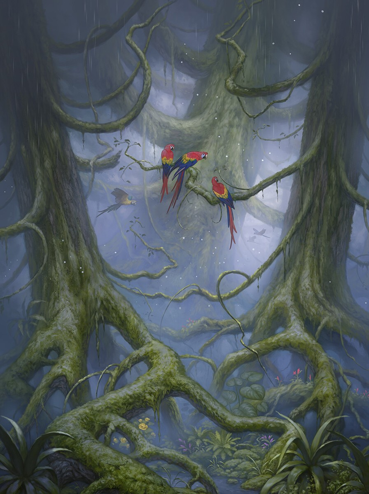
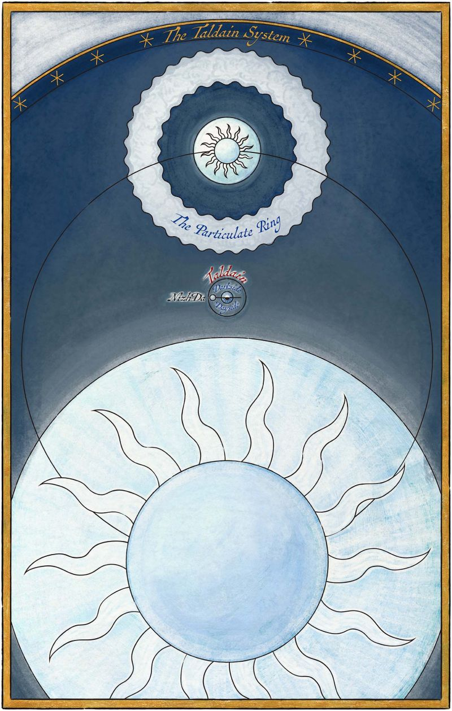
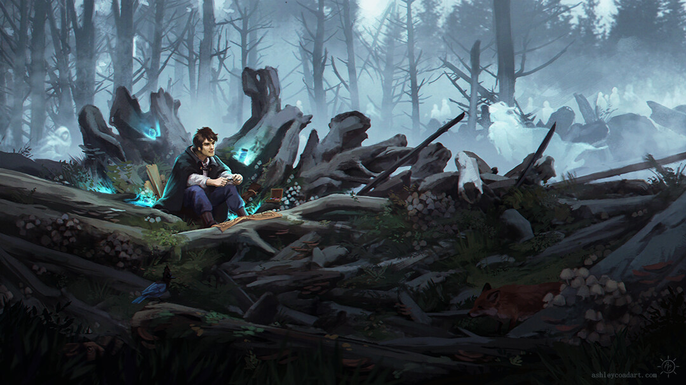

THRENODY
A dark and eerie world, shrouded in constant danger from haunting spirits. The planet is heavily influenced by magical forces, where death and the afterlife have an active presence.
Much of Threnody is dominated by the Forest of Hell, a place filled with spectral beings known as shades, which pose a lethal threat to anyone who breaks certain mysterious rules.

THRENODITE SYSTEM
The Threnodite system is the planetary system that contains Threnody. There are four planets in this system, however, more planets existed in the planetary system in the distant past.
Three of the four remaining planets as well as the sole moon, are named after different types of songs of mourning: Monody, Elegy, Threnody, and Purity.


INHABITANTS
The inhabitants of Threnody are a resilient and cautious people, shaped by generations of survival in a world where death does not always mean peace. Most live in fear of the shades, ghostly remnants of the dead that roam the Forests and can attack the living under certain conditions. To stay safe, Threnodites follow strict rules, such as avoiding flame, running, or spilling blood, that are believed to provoke these spirits.
There are two main groups of people: those who live in relative safety outside the Forests, and those known as Forest Dwellers, who remain within the dangerous regions and follow even stricter customs to survive.
SHADES
Shades are the most feared and defining aspect of life on Threnody. These spectral beings are the restless dead. Souls that, for reasons not fully understood, linger after death and become dangerous to the living. Shades are not mindless, but they follow strict, seemingly supernatural rules of behavior. If provoked, they attack swiftly and lethally, draining the life from their victims with a touch.